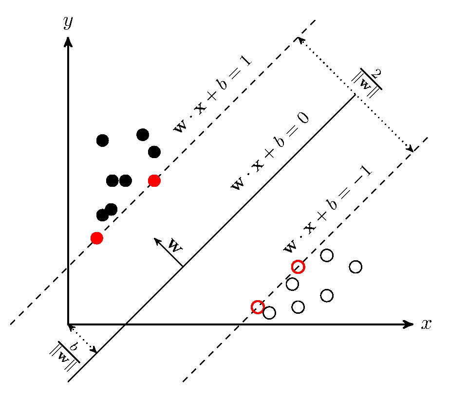

支持向量机SVM理论——基本数学原理
基本形式
给定训练样本集$D={(x_1,y_1),(x_2,y_2),…,(x_m,y_m)},y_i\in{-1,+1}$，分类学习的思想就是在训练集$D$的样本空间内找到一个划分超平面，将样本尽可能地分离开。
在样本空间中，划分超平面可以通过如下的线性方程来描述：
$$\omega^{T}x+b=0,\omega=(\omega_1,\omega_2,…,\omega_d) \tag{1}$$
$\omega$作为法向量，决定了超平面的方向；$b$作为位移项，决定了平面距离原点的距离。该式确定了唯一的超平面，不难看出决定超平面的仅仅是$\omega$和$b$两个量，所以后面仅使用$(\omega,b)$代表超平面。根据上式，样本空间任意点$x$到超平面的距离为
$$r=\frac{|\omega^{T}x+b|}{\parallel\omega\parallel} \tag{2}$$
上面的公式可以由二维、三维推广来：

假设超平面$(\omega,b)$能够将训练样本正确分类，即对$(x_i,y_i) \in D$
$$\begin{cases} \omega^{‘T}x+b^{‘} > 0, & y_i=+1 \ \omega^{‘T}x+b^{‘} < 0, & y_i=-1 \end{cases} \tag{3}$$
通过一定的缩放变换，可以得到下式：
$$\begin{cases} \omega^{T}x+b \geq +1, & y_i=+1 \ \omega^{T}x+b \leq -1, & y_i=-1 \end{cases} \tag{4}$$
若超平面$(\omega^{‘}, b^{‘})$能将训练样本正确分类，则总存在缩放变换$\zeta \omega^{‘} \to \omega$和$\zeta b^{‘} \to b$，使(4)式成立。
每个样本都对应了一个特征向量，特殊地，将距离超平面最近同时使上式等号成立的样本称为“支持向量”。支持向量到超平面的距离之和称为“间隔”：
$$\gamma=\frac{2}{\parallel\omega\parallel} \tag{5}$$

为了找到“最大间隔”的划分超平面，即求解下面的凸优化问题
$$\max \limits_{\omega,b} \frac{2}{\parallel\omega\parallel} \tag{6}$$
$$s.t. y_i(\omega^{T}x_i+b) \geq 1,i=1,2,…,m.$$
转化为凸优化理论的标准形式为：
$$\min \limits_{\omega,b} \frac{1}{2}\parallel\omega\parallel^2 \tag{7}$$
$$s.t. y_i(\omega^{T}x_i+b) \geq 1,i=1,2,…,m.$$
其中，$\parallel\omega^{-1}\parallel$转化为$\parallel\omega\parallel^2$的形式，是为了后面对偶变换的方便。
对偶问题
上面的问题是一个凸二次规划问题，可以使用拉格朗日乘子法转化为“对偶问题”(拉格朗日乘子法简介)。
拉格朗日对偶问题的思路是将上面的约束条件引入目标函数，假设对本问题的约束条添加拉格朗日乘子$\lambda_i\geq0$，则本问题的拉格朗日对偶函数可写为：
$$L(\omega,b,\lambda)=\frac{1}{2}\parallel\omega\parallel^2+\sum_{i=1}^{m} \lambda_i(1-y_i(\omega^{T}x_i+b)) \tag{8}$$
令$L(\omega,b,\lambda)$对$\omega$和$b$的偏导为0，可得
$$\omega = \sum_{i=1}^{m} \lambda_i y_i x_i \tag{9}$$
$$0 = \sum_{i=1}^{m} \lambda_i y_i \tag{10}$$
实值函数对矩阵/向量的导数：
- 要点：求导结果与自变量同型，且每个元素就是对自变量的相应分量求导
若函数$f: \mathcal{R}^{m \times n} \to \mathcal{R}$，则$\partial{f} / \partial{X}$也是一个$m \times n$维矩阵，且$( \partial{f} / \partial{X} ) _{ij} = \partial{f} / \partial{x} _{ij}$。也可以使用劈形算子将导数记作$\bigtriangledown _{X} f$。
由于向量是矩阵的特殊情形，根据上面的定义也可以得到自变量为向量时的定义：若函数$f: \mathcal{R}^{m} \to \mathcal{R}$，则$\partial{f} / \partial{X}$也是一个m维向量，且$( \partial{f} / \partial{X} ) _{i} = \partial{f} / \partial{x} _{i}$。若自变量是行向量则结果为行向量，可记作$\bigtriangledown _{X^T} f$或$\partial{f} / \partial{X} ^T$；若自变量是列向量则求导结果为列向量，可记作$\bigtriangledown _X f$或$\partial{f} / \partial{X}$。
将上面式(9)(10)带回式(8)，即得到对偶问题
$$\max \limits_{\lambda} \sum_{i=1}^{m} \lambda_i - \frac{1}{2} \sum_{i=1}^{m} \sum_{j=1}^{m} \lambda_i \lambda_j y_i y_j x_i^{T} x_j \tag{11}$$
$$s.t.\sum_{i=1}^{m} \lambda_i y_i = 0, \lambda_i \geq 0,i=1,2,…,m.$$
证明过程：
$$\frac{1}{2}\parallel\omega\parallel^2+\sum_{i=1}^{m} \lambda_i(1-y_i(\omega^{T}x_i+b)) \ = \frac{1}{2} \omega^2 + \sum_{i = 1}^{m} \lambda_{i} - \sum_{i = 1}^{m} \lambda_{i} y_{i} \omega^{T} x_{i} - \sum_{i = 1}^{m} \lambda_{i} y_{i} b $$
因为，$\sum_{i=1}^{m} \lambda_i y_i = 0$，所以$(\sum_{i=1}^{m} \lambda_i y_i) b = 0$。又因为$\omega=\sum_{i=1}^{m} \lambda_i y_i x_i$,
$$= \frac{1}{2} \omega^2 + \sum_{i=1}^{m} \lambda_i - \omega^T \omega \ = - \frac{1}{2} \omega^2 + \sum_{i=1}^m \lambda_i \ = \sum_{i=1}^m \lambda_i - \frac{1}{2} { \sum_{i=1}^m \lambda_i y_i x_i \cdot \sum_{i=j}^m \lambda_j y_j x_j^T } \ = \sum_{i=1}^m \lambda_i - \frac{1}{2} \sum_{i=1}^m \sum_{i=j}^m \lambda_i \lambda_j y_i y_j x_i x_j^T$$
根据拉格朗日对偶原理，对偶问题的最优值等于原问题的最优值，必须满足KKT条件。KKT条件包括：
$$\begin{cases} \bigtriangledown_x L( x^, \lambda^, b^ ) = 0 \ \bigtriangledown_{\lambda} L( x^, \lambda^, b^ ) = 0 \ \bigtriangledown_{b} L( x^, \lambda^, b^ ) = 0 \ \lambda_{i} ^ g ( x_i ^ ) = 0 \ \lambda_i \ge 0 \ g ( x_i ) \ge 0 \ h ( x_j ^ ) = 0 \end{cases} \tag{12}$$
这明显是一个二次规划，我们可以通过SMO算法求解。SMO的基本思想就是固定$\lambda_{i}$，然后求解$\lambda_{i}$上的极值。这里，由于有$\sum_{i=1}^{m} \lambda_i y_i$约束，所以选择两个变量$\lambda_{i}$和$\lambda_{j}$，并固定其他变量。SMO不断执行下面的操作，直到收敛：
选取一对变量$\lambda_{i}$和$\lambda_{j}$；
固定$\lambda_{i}$和$\lambda_{j}$之外的参数，根据式(13)，更新$\lambda_{i}$和$\lambda_{j}$。
注意选择变量$\lambda_{i}$和$\lambda_{j}$，需要选择对应的样本间间隔最大。式(11)可以转化为一个二次方程，可以直接求极值。
求解得到$\lambda$后，可求得$\omega$和$b$：
$\omega$的求法：带回$\omega=\sum_{i=1}^{m} \lambda_i y_i x_i$即可求得，
$b$的求法：由于支持向量$(x_s,y_s)$有$y_s f(x_s)=1$，即
$$y_s (\sum_{i \in S} \lambda_i y_i x_i^T x_s + b) = 1 \tag{13}$$
其中，$S = \lbrace i \vert \lambda_i > 0, i = 1, 2, …, m \rbrace$。
实际上现实任务中，常采取求支持向量求解的平均值
$$b=\frac{1}{|S|} \sum_{s \in S} (y_s - \sum_{i \in S} \lambda_i y_i x_i^T x_s) \tag{14}$$
继而可以求解出超平面方程
$$f(x)=\omega^T x + b = \sum_{i=1}^{m} \lambda_i y_i x_i^T x + b \tag{15}$$
软间隔
实际问题中，有时无法找到恰当的超平面分割数据，或者难以避免SVM过拟合。所以，引入“软间隔”的概念，允许某些数据点不满足
$$y_i (\omega^T x_i + b) \ge 1 \tag{16}$$
通过修改公式(7)，引入松弛变量，可以在最大化间隔时，不满足约束的样本尽可能少。
$$\min \limits_{\omega,b} \frac{1}{2}\parallel\omega\parallel^2 + C \sum_{i}^{m} \ell_{0/1} (y_i (\omega^T x_i + b) - 1) \tag{17}$$
其中，$C>0$是一个常数，当$C \to \infty$强迫所有样本满足式(17)。$\ell_{0/1}$是0/1损失函数，类似的函数还有
hinge损失：$\ell_{hinge}(z) = \max(0, 1-z)$
指数损失：$\ell_{exp}(z) = \exp (-z)$
对率损失：$\ell_{log}(z) = \log(1 + \exp(-z))$
引入松弛变量$\xi_i \ge 0$，可以将式(17)改成
$$\min \limits_{\omega,b} \frac{1}{2}\parallel\omega\parallel^2 + C \sum_{i}^{m} \xi_i \ s.t. \quad y_i(\omega^{T}x_i+b) \geq 1 - \xi_i \ \xi_i \ge 0 ,i=1,2,…,m. \tag{18}$$
因此，式(18)的拉格朗日函数为
$$L(\omega,b,\lambda, \xi, \mu)=\frac{1}{2}\parallel\omega\parallel^2 + C\sum_{i=1}^{m} \xi_i + \sum_{i=1}^{m} \lambda_i(1 - \xi_i - y_i(\omega^{T}x_i+b)) - \sum_{i=1}^{m} \mu_i \xi_i \tag{19}$$
其中，$\lambda_i \ge 0, \mu_i \ge 0$是拉格朗日乘子。式(19)的偏导数为0，可得
$$\omega = \sum_{i=1}^{m} \lambda_i y_i x_i \tag{20}$$
$$0 = \sum_{i=1}^{m} \lambda_i y_i \tag{21}$$
$$C = \lambda_i + \mu_i \tag{22}$$
将式(20)(21)(22)带回公式(19)，得到对偶函数为
$$\max \limits_{\lambda} \sum_{i=1}^{m} \lambda_i - \frac{1}{2} \sum_{i=1}^{m} \sum_{j=1}^{m} \lambda_i \lambda_j y_i y_j x_i^{T} x_j \ s.t. \quad \sum_{i=1}^{m} \lambda_i y_i = 0, \ 0 \le \lambda_i \le C ,i=1,2,…,m. \tag{23}$$
此时的KKT条件为
$$\begin{cases} \lambda_i \ge 0, \mu_i \ge 0, \ y_i f(x_i) - 1 + \xi_i \ge 0, \ \lambda_i (y_if(x_i) - 1 + \xi_i) = 0, \ \xi_i \ge 0, \mu_i \xi_i = 0. \end{cases} \tag{24}$$
软间隔的求解方式并没有太大变化，仅是$\lambda$参数多了上界。